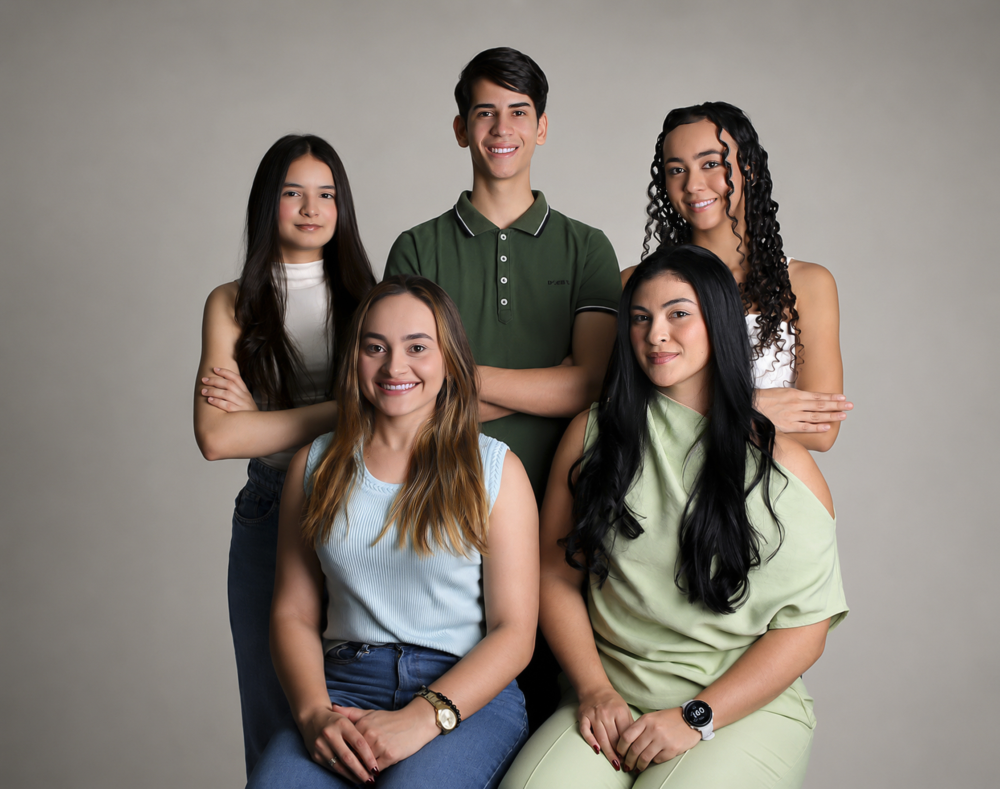

O InterRural conecta produtores rurais da região de Emas/PB com oportunidades reais: formalização de negócios, acesso à tecnologia e estratégias de venda que funcionam.
Entre em contatoO InterRural nasceu da observação de uma realidade concreta: os produtores rurais de Emas têm muito a oferecer, mas enfrentam barreiras reais para crescer — seja pela falta de acesso à tecnologia, seja pela dificuldade de formalizar seus negócios ou de alcançar novos consumidores.
Desenvolvido por estudantes do curso técnico em Vendas da Escola Cidadã Integral Técnica Professora Margarida Remígio Loureiro, o projeto usa o conhecimento acadêmico para gerar impacto direto na comunidade. Os estudantes atuam como mediadores entre o campo e a cidade — capacitando, orientando e conectando.
Veja o que oferecemosAtendimento simples, direto e sem burocracia para o pequeno empreendedor rural.
Auxiliamos no registro do seu negócio como Microempreendedor Individual ou na abertura de CNPJ, de forma rápida e sem complicação.
Emissão de cartão CNPJ, declarações e certidões necessárias para regularizar e fortalecer seu empreendimento rural.
Acompanhamento personalizado para pequenos empreendedores rurais: gestão, precificação, atendimento ao cliente e estratégias de crescimento.
Ajudamos você a usar redes sociais, WhatsApp Business e outras ferramentas digitais para divulgar seus produtos e alcançar mais clientes — de forma simples e acessível.
O InterRural foi selecionado pelo Programa de Educação para Inovação e Empreendedorismo na Rede Estadual de Ensino — Ouse Criar, edição 2025/2026, promovido pela Secretaria de Estado da Educação da Paraíba (SEE/PB) em parceria com a FAPESQ.
Instituído pela Lei nº 11.535/2019, o programa reconhece projetos que unem pensamento científico, empreendedorismo e transformação social nas comunidades paraibanas. Ser aprovado é a chancela de que o InterRural está no caminho certo.
Projeto Aprovado
Ouse Criar 2025/2026
SEE/PB · FAPESQ
"Do Campo às Cidades,
Empreender para Transformar"
Estudantes e professoras da Escola Cidadã Integral Técnica Profª Margarida Remígio Loureiro, em Emas/PB.

Tem dúvidas ou quer saber como o InterRural pode ajudar o seu negócio? Escolha o canal que preferir.